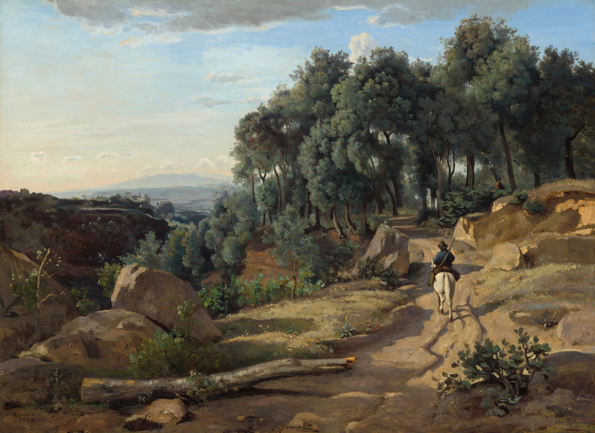

Prose
Set Theory

Nearly half a century earlier, they had stood in the museum in Mantua on opposite sides of a large, glass-enclosed exhibition case, peering down at the 6,000-year-old skeletal lovers. Through a reflection of her own face, she could see the couple’s crisscrossing humeral, radial, and ulnar bones, the relics of a loving embrace, the frontal sections of their crania nearly touching, as if they had been murmuring comforting words to each other as they neared death; beyond, past another sheet of impenetrable glass, she could see his forehead pressed almost against it, roughly mirroring her own, her husband, not yet afflicted, staring down at the pair with his own private thoughts that no doubt exceeded her own in profundity, as she was governed entirely by the visual, which, even when involving three dimensions, lacked the element of time. For her, it was all about tracing relations in static space, with the aim of, at some future date, replicating the images that had managed to make their way along various pathways to the occipital lobe in her brain.
This theme of dead lovers stalked them on that Italian trip. Several days earlier in Volterra, at the Guarnacci, which seemed dedicated to artifacts for containing or commemorating the dead, they had passed through rooms filled with Etruscan cinerary urns, schematics of tomb complexes, tools used to carve funerary items out of alabaster, bas reliefs on coffins portraying the sacrifice of the Trojan prisoners, the killing of the Proci, Actaeon ravened by wild dogs. Finally they arrived at one of the museum’s most prized items, the Lid of the Spouses. The larger figure was that of the husband, who lay on his left side on a thick, stuffed mat, arm propped on a bolster pillow embroidered with olive leaves, his coarse, fleshy face frozen in a look of solemnity emphasized by his oversized eyes, which gazed off into eternity as if judging it rather wanting. Although rendered at two-thirds his scale, the wife was the more compelling figure, belly pressed to the mat in partial cobra pose, head tilted back on a sturdy neck, proud nose, her cheekbones prominent but her jawline jiggered by jowls, her gaze fixed not on eternity but firmly on the face of her husband, her mouth turned down as if both importuning him to look at her and castigating him because he would not.
Back in Vermont, she had been compelled to research this trope—the dead or dying couple—especially because she felt she had long since exhausted the mother and child, having executed that pair in charcoal, oil, gouache, and silverpoint on paper and canvas, and in terra cotta, bronze via the lost wax method, several types of wood (bubinga, purpleheart, zebrawood), and multi-media assemblage, with elements salvaged from the furthest, never dusted, and rarely penetrated reaches of T.R. James Hardware down the road.
As it turned out, depictions of heterosexual couples on sarcophagi, not to mention funeral medallions, memorial paintings, and burial banners, abounded. Almost every culture had at least one example. And so she embarked upon a new artistic journey, one that she was fairly confident would earn her little money at the craft fairs throughout the Northeast that had supplied at least a third of her income for the past few decades—too macabre for wide appeal—but one that her husband, exhibiting his customary positivity, attributable in part to his having early in life found an unshakeable fundament in numbers, wholeheartedly encouraged her to pursue. When she was feeling less generous toward him, she ascribed his enthusiasm for her new subject to selfishness. Neither mother nor child had anything to do with him, as she and he had never reproduced. Whereas he could see himself in one party in her new works and find himself validated. When she was feeling less generous toward herself, she attributed her long-time fixation with mother and child to her own flawed and failed performance of womanhood—she had never desired children—as well as to her mother’s flawed and failed performance of mothering. A narcissist of the highest order, her mother manifested little care or tenderness.
It was true that her husband did not occupy much square footage in her oeuvre and the few portraits there were followed a peculiar pattern. Flicking through her digital archive one day while preparing an arts residency application, she discovered she had almost invariably but unintentionally depicted him from behind. Shortly after they began living together, she had painted him at the Musée d’Orsay—or maybe it was the Victoria & Albert?—him in his beret standing in front of an Art Nouveau armoire, his face in the mirror a bit messily assembled from a few quick bristle-brush strokes, his back an impressive navy triangle of muscularity under that Brooks Brothers sports jacket he eventually wore to the last of its ironic threads. Because of course, he was not a Brooks Brothers kind of fellow. Maybe a dozen years later, around the time he had been deciding whether or not to have an affair with the woman who routinely outpaced him as they swam their morning 3000 meters, she had (possibly hoping to flatter him and divert his attention from his poolmate) done a gorgeous pen and ink of him standing before a huge Giuseppe Penone they had stumbled upon in a Geneva gallery, a blown up brain scan executed in burnt siena chalk on raw linen canvas. In her drawing, his blonde but graying locks in undulating strokes lay thick on his nape under his fedora, his back again impressive for its strength. But she had caught a hint of something awry—which she initially attributed to parallax distortion in the photo she had sketched from but later realized was a very early sign of the Parkinson’s—a slight tilt off true, a sideways skew that would, in time, become a full blown parenthesis of his figure that was clearly on display in the last digitally manipulated photographic portrait she had made of him walking away from her with his rollator on an asphalt path.
Focus on others, aside from visual focus, was not her forte, a trait acquired from her mother. But neither was she focused on herself. Had she been born in the 21st century, she probably would have been assessed to be “on the spectrum”—a strange phrase that always suggested chromatic aberrations to her, not psychological ones. Yet she didn’t think of herself as impaired, and her husband seemed to find whatever level of attention she gave him adequate. He insisted on marrying her, even though she said she didn’t care about formalizing their relationship. In truth, she believed if she fell into any identifiable category, it was that of niche dweller. An only child, she had grown up in the interstices between her parents’ ecosystems, foraging for sustenance among her father and his compadres in the music industry; and among her mother’s extended Irish-American family, strewn from the Jersey shore to north Jersey, with a few scattered aunts, uncles, and cousins in the suburbs ringing Philly, including one Monsignor.
From the session cats and audio engineers comprising her father’s professional circle, she learned angles and highlights and chiaroscuro. Tucked against the battens of the sound booth behind the giant board full of knobs and sliders that her father twiddled with, staring through the fuscous windows into the studio, she traced the mics and wires slicing the room all Russian constructivist-like into overlapping wedges against the geometric pointillism of the perforated acoustic panels, spotted the light from the kliegs hanging from the ceiling rail starbursting off the polished brass curves of the saxes and trumpets. Deep in the night on those few occasions she was allowed to stay late, she watched the shy clarinetists and oboists in the corner, cheeks illumined then enshadowed, embouchures seesawing in and out of darkness, looking like Caravaggio’s saints and sinners come alive. Walking down 9th Avenue in the pre-dawn, her father rested his hand on the base of her neck, giving a little directive pressure here and there when they came to a turn or jaywalked, and until she met her husband, it was the safest she had ever felt.
From her mother’s side, she learned family in all its messiness, which is to say, she learned perspective. Each school morning, she suffered a mandatory inspection before being allowed to venture out onto Perry Street on her way to P.S. 107. But her six cousins in Middletown exited the house any morning of the week without having to muster before their mother. They wore whatever shirts, skirts, and pants they wanted, not caring whether they were wrinkled, soiled, or smelly, except for when the youngest bore a strong aroma of pee due to accident or misfire at the toilet and was ushered back into the house by his eldest sister to change.
The rest of her mother’s family was fully aware of her mother’s difficult character. “Been like this since she was a leanbh iníne,” one of the great aunts said. Within earshot, assorted kin and kith gabbed about her mother’s selfishness, vanity (her propensity for designer clothes drew special fire), pride, inconsiderateness, rudeness. Thanks to them, she came to the understanding that her own so-called faults, which her mother enumerated often and emphatically, might be interpreted in a different way. While her mother charged her with being standoffish, her grandmother admired her for her watchfulness. While her mother thought she was greedy, her requests for just one more cookie looked conservative when her cousin from South Philly spread a hand wide and captured half a stack of Chips Ahoy! at a time before any of the other children could get any. When her mother told her she was impatient, she silently contemplated how she was quite capable of entertaining herself during the hours she had to spend trailing her mother around department stores.
Indeed, her mother’s second job, after whatever job she happened to have, was buying things. She was on a first-name basis with the commissioned sales clerks in the shoe section of Saks, and knew most of the personnel on the women’s floor at Bloomingdale’s. By the time she was in high school, she realized that her mother operated in a circular economy: she worked in order to buy what she wore to work and to pay for the taxis to get there and back. Her mother refused to ride the subway and rarely deigned to board city buses—certainly never crosstown.
For as long as she could remember, her mother’s places of employment had been on the Upper East Side. Once a month for several years in elementary school, she and her father would grab a subway around 3 in the afternoon, and then walk toward the river from Grand Central Station to near the UN, where he dropped her off at the chemist’s—“Just a snooty word for pharmacy,” he said. In a back office, she would help her mother “run the bills,” a process that involved removing manila cards with handwritten notations on them from a set of narrow drawers, placing a piece of translucent paper over them, feeding them one by one through the platens of a machine similar to a typewriter but without keys, and then refiling the cards and folding up the translucent paper so that the person’s address fit just right in the window of an envelope. A strange odor akin to rubbing alcohol emanated from the machine, filling the back office. About 7 p.m. when they finished, they would take a taxi downtown to Pierre Roche, where her mother would have the chef’s special and she, the filet of sole with frites.
This might have been an occasion, she thought wistfully as an adult, for her mother to have caught up with all the doings in her life and those of her schoolmates, but her mother was incapable of anything but pointless chatter and flirting with the waiters and engaging in a brief tête-a tête with the chef, who invariably came out to buss her on both cheeks and whisper briefly in her ear. Then she and her mother would walk the few blocks to Perry Street and, since her father was at a session, she would take herself to bed and tuck herself in. Although she did not pray before or after climbing in. She had never been to church. Nor did she have any stuffed animals to hug, as her mother didn’t believe in children’s toys. She was always grateful to have a full stomach and a quiet room and a roof under which to sleep. Each night, she would give thanks for those and not try to give a name to the other, vaguely painful, feeling suffusing her.
Another place her mother had worked was the office of a doctor—always referred to as the obigeewhy-en—which she eventually learned was an acronym indicating that he specialized in delivering babies. In time, she learned it was more than that. Couples from all over the world came to him due to infertility, treatment for which was more art than science. The big gun in his toolkit was artificial insemination, in which the vigorous, freshly collected sperm of medical students from New York-Presbyterian across the street was substituted for deficient sperm of the women’s spouses. When she had to wait for her mother, she would retreat to a spot in the corner of the waiting room and surreptitiously observe the women positioned primly on the Sheridan chairs upholstered in striped silk the color of daffodils, wondering whether the doctor bothered them as much as he did her—but he must not, or why would they fly across oceans for an appointment with him? He especially gave her the creeps when he emerged from his inner sanctum and navigated to the reception desk where her mother sat. When the doctor’s powdery cheek drew near her mother’s temple and the little pink tip of his tongue licked at his ample upper lip, she felt especially queasy.
The year she started ninth grade at the Notre Dame School, her mother got a new job as assistant to the head of a graphic design firm with corporate clients all over Midtown, and she was surprised by how relieved she felt not to have to go to the doctor’s office any more. Soon after her mother had started the new job, she came home from school to discover in the pile below the mail slot a hand addressed envelope bearing the doctor’s return address. Without a thought, she pivoted back out the door and ankled halfway down the block to a dumpster filled with sheet rock and lumber and grimy insulation foam from a gutted apartment building. She crumpled the letter and tossed it over the dumpster rim, thinking,“Now that will be just about enough of that, young lady,” one of her mother’s favorite admonitions.
Once when she was nine, she had been deeply dreaming she was riding the 3rd Avenue bus downtown, on the other side of the Village near Cooper Union. She realized she was on the wrong bus, heading the wrong way. She was supposed to have met her father at La Guardia Airport for lunch. In a panic to get off, she pulled the cord, but it didn’t work and the bus careered on toward the Bowery. As she yanked the cord again and again, a sound began to issue, not a buzz like normal, but a kind of whacking noise, that, after a few more whacks brought her up out of the dream into a darkness she gradually perceived as her bedroom. From what she shortly identified as the direction of the kitchen were coming punctuated noises—whack…whack…whack—and her father’s voice, low and urgent, saying,“Shhh, she’s sleeping.” Her mother answered, “So?” Whack. It was a wooden kitchen cabinet door slamming against its frame. Whack. “Let her wake up. Hear how fucking inadequate her father is.” She had never heard her mother say “fucking.” No more whacking ensued. Her mother said, “Let her wake up,” as her father insisted, “Stop it. Stop. Stop right now,” in a tone she had only heard one summer when she was little. She and her father were walking hand in hand and a taxi had turned a corner and nearly clipped her in a crosswalk, and in a split second her father was in the cabbie’s face, berating him in the tone he just used with her mother. Afterward, as he took her by the hand again and they continued across the white stripes, he was shaking. Now she strained to hear her mother; couldn’t make out words, just heard her anger. It took her a long time to go back to sleep, and when she did, she found herself in a dream in which she didn’t need to meet her father at La Guardia any more.
The memory of the slamming cupboards came to her again, unbidden, when she began researching the trope of the dead couples, perhaps because her parents were both gone by then, her father after a long, wasting illness, her mother (it seemed unfair) peacefully in her sleep of unknown causes. She did not bury them together, nor would she have done so had they asked, which they hadn’t.
She had her mother cremated. Her mother had left detailed notes regarding her ceremonial preferences in her loose cursive spilling across multiple pages of onion paper. But aside from the cremation, she ignored all of them, except her mother’s wish that she be entombed at Mt. Olivet Cemetery in the vicinity of several dozen family members, including her estranged oldest sister. That request came as a bit of a shocker, but her mother seemed to intend this not as a reconciliation, rather a disruption of her sister’s eternal rest. In burial plots nearby lay three of her mother’s other six siblings (just designated spots for the two not yet departed), her parents, her maternal grandparents, and various aunts and uncles extending back at least three generations.
Her father left no instructions—in fact had never mentioned any desires regarding his passing. She opted to have him cremated and then took a jam jar of his ashes to the summit of Mt. Equinox, a mission she undertook without saying anything to anyone. Ten years earlier she would have invited her husband, but now he could barely make a quarter mile on flat trails. She didn’t want him to feel left out, so she didn’t disclose her plan. She simply told him one mid-July morning that she was off to Manchester, back in several hours. She parked at the hotel in town and headed to the Blue Summit trail, hoping the predicted rain would hold off. About two thirds of the way up, as the hardwoods were shifting to red spruce and yellow birch, a brisk wind rose and the rain came down in sheets as she hunkered at the base of a balsam fir, not the best tree for shelter. As the wind set the fir’s boughs swishing, she was plunged into the memory of some drummer in the recording studio one night, moving his brushes around the head of his snare, making a similar sound. She interpreted this as the presence—and approval—of her father, which renewed her energy and led her to resume her hike even before the rain fully stopped. The sun’s re-emergence as she emptied the jar of ashes at the base of a mountain ash—an intended echo of remains with tree—providing further confirmation of the correctness of her mission.
Once she had emptied the jar, her mental compass immediately reoriented northward to home. She ran down the trail, plummeting almost, at speeds too fast for someone her age. Even in those days, not long after his diagnosis, she felt acutely aware of any time she spent away from home and worried about whether her husband would fall or start a fire while trying to warm a pot of soup or have a mishap with kitchen knives. Her husband never showed concern about risks to himself or minded her absences. This was not a function of the Parkinson’s but of the singular ability to concentrate he had always possessed. He hadn’t yet lost his ability to type and was at his computer, engrossed, when she rushed in off the mountain. He managed his usual distracted, “How is it out there?” The two customary choices for answer were “Crazy” or “Empty.” She gave the latter and expanded upon this answer over lunch, their time for conversation about logistics and doings of the day. The details she provided on this occasion were minimal and her actual adventure left untold. After lunch, as he always did until he couldn’t anymore, he went back to his computer.
Since college, he had been employed as a software developer for a company that produced a computer program that would be a household name if anyone actually knew about it and what it did, since it was on most computers around the world. When they still lived in the city, he would tell people at parties that he was a “code farmer.” Once they moved to the country, he told them he was a “gentleman code farmer.” Both names were jokes, because in the trade, “code farmer” was derogatory, meaning someone who wrote low quality, rote programs. Instead, her husband was apparently widely known for his elegant code. He once tried to explain it to her, about how essential clean code was to scalability and extensibility, but he lost her around levels of cyclometric complexity. She knew from his colleagues that he was held in highest regard for his skill in refactoring—whatever that was—and apparently had something like a cult following among younger programmers in the firm.
Her husband’s had been among the few success stories of the New Math, as deployed by Mr. Vasiliadis, his second grade teacher at P.S. 85 in Astoria. His classmates had been entirely befuddled by set theory and the use of alphabetic equations (“If a=b, b=a. Huh? What’s with the letters? It’s supposed to be math!”) and found it more amusing to tune Mr. V. out—even the kid who had moved from Athens over the summer and spoke Greek had trouble understanding him. Instead, they’d bet on whether the next subway that flashed by their windows on the El would be an N or a W, or would pass notes via the “message roller.” This was an empty spool of thread Nick Alfa had snagged from his mother’s sewing table into which small notes could be stuffed and skittled across the floor to a recipient under cover of the clatter from the El. Oblivious to all his classmates’ doings, her husband said that as soon as Mr. V. introduced them to sets, his whole world clicked into clarity. As he watched Mr. V. chalking up rows of numbers separated by commas, a shiver had run across his scalp, bringing an almost instantaneous understanding that every object, whether corporeal or spiritual, belongs to a set (all the rivers in New York, all the stars in a galaxy, all the angels in heaven). And soon he learned those sets had properties that could be described; and there were different types of sets; and sets could be operated on. Like a terrier, he had pestered Mr. V. and the school librarian for extra reading and eventually had been handed a copy of Naive Set Theory by Halmos, even though, Mr. V. said it was “for boys much older to you.” That copy, and dozens more over the years, had been worn to bits; a prized first edition she had given him for his 50th birthday now sat wrapped in glassine on a shelf by his desk, alongside the latest dogeared paperback version held together with a rubber band, its pages long since come loose from its cheap binding.
At NYU in the days of punch cards, he had learned to program and never looked back. Indeed, a stack of those cards was partly responsible for their marriage. She was paying her way through Pratt Institute working for a friend of her father, a flugelhorn player who ran a side gig as a fine art mover—or possibly the other way around. One day on Washington Square, in a great mood after they had successfully engineered a huge Larry Poons dot painting out of some brownstone and gotten it safely into the truck, she hopped off the liftgate and swung around the doors only to run headlong into an oncoming person, causing him to drop a box full of oblong manilla cards, which fanned across the sidewalk. When she pictured it later, his exclamations always filled word balloons like explosive superhero sound effects. “Fuck!” “Shit!” “Goddamn it!” When she knelt to join in picking the cards up, he waved his hands, saying,“Thanks, but don’t,” as he went on gingerly trying to shuffle the deck back together. His expression was so disconsolate when he stood up, looking down at his box of disarray, she said, “Look, time for break anyway, let me at least buy you lunch.” He seemed to register her presence then, and, as his eyes met hers, his face brightened a degree, and to her surprise he accepted.
Over several slices of New York’s best, she found out about the cards—the final project for his NYU class in econometrics (she pretended to know what that was)—a set of data and 18 equations that would be loaded into a machine called UNIVAC to yield a model of the global silicon economy, which he said was a big deal owing to the coming Age of the Computer. He leaned forward when he told her about the importance of such simulations and how computers would soon shrink in size from filling whole rooms to fitting on a desk and how silicon was the key and gazed at her in such a way that she became convinced that he was seeing through her to the future. By the time she had to dash back to rejoin her partner and trundle the Poons off to a warehouse way uptown, he had asked for her number and, as they parted, he waved his hand over his box abracadabra-ish, declaring, “Oh, well! It’s all okay. Talk about randomizing your data!” and walked away laughing to himself. Again, she had no idea what he meant, but at least his despondency had vanished.
Her father had approved of him when they met in Chinatown for dim sum, but
her mother instantly disliked him when he came to dinner at Perry Street a few months later. The first black mark against him was that he had met her father first. Secondly, he did not meet her standard for manners. She expected attentions that verged on obsequiousness. He left early from dinner without lavishly praising her indifferent cooking. Finally, he arranged to tour the sound studio the following week. Her mother made sure to phone her the next day with her assessment. “He’s using your father. And what makes you think he even likes you? He barely pays any attention to you at all.”
Her mother’s comment came back to her at the foundry as she was cutting off the sprues in the last stages of the casting process. It was her largest work ever, and she thought she had produced a good likeness of her husband of fifty-plus years, even if everyone said her rendition of herself looked older and more solemn than she really was. She had configured the couple huddled together in the pose of the Two Maidens, originally captured by Fiorelli in plaster at Pompeii, where the pair had been buried in the deadly tephra raining down from Vesuvius. Archaeologists had recently regendered one of the supposed maidens based on DNA, which struck her as fateful, because she had exercised artistic license to do that when she designed this sculpture a few years back. She had also stolen a feature from an 18th-century polychrome statue of Saint Teresa that boasted a panel in the bodice of the saint’s dress that, when removed, revealed her fist-sized heart. Rendered at half-scale, the bronze torso of her husband contained a small door that opened onto a cavity in its chest, into which was fitted an acrylic block embedded with his ashes. The female figure contained a similar cavity that would hold her own remains eventually, if one of her cousins would follow through on her promise.
Toward the end, before they moved him to hospice, her husband spent two nights in the hospital, which he found unbearable. He said he felt like a caged animal. The Parkinson’s drugs were failing, and his tremors terrified her and were torturous for him. In the middle of the second night, she had clambered over the aluminum rail, threading her arms through the lianas of plastic tubing and edging one knee over him atop the thin white cotton blankets. “You’re like ice,” she said. His speech had become barely decipherable, even to her, who had been for so many years his interpreter. She could just make out his response. “You’re toasty.” He rocked and bucked, spasming arrhythmically, his breath jagged. She clung to him. Although there was no real comfort in it for her, just shocks and aftershocks, she believed she gave him some solace. He always told her, when they lay together like this, that he felt safe. She thought of that sweetness they shared long ago, when they clung together undisrupted, and she began to quake, seeing flaming bitumen descend through the night sky, bunker busters collapsing apartment buildings, drones loosing their torrents of fire upon sleeping couples all over the planet, imperiled in each other’s arms.
Gina Maranto is a graduate of Pomona College (’77) and The Writing Seminars at The Johns Hopkins University (’80). She is a prize-winning science writer who published one of the first national magazine cover articles on climate change in 1986. She taught for 21 years at the University of Miami, where she ran the English Composition and Ecosystem Science and Policy programs. Her recent fiction has been published in BlazeVox and The Esthetic Apostle.